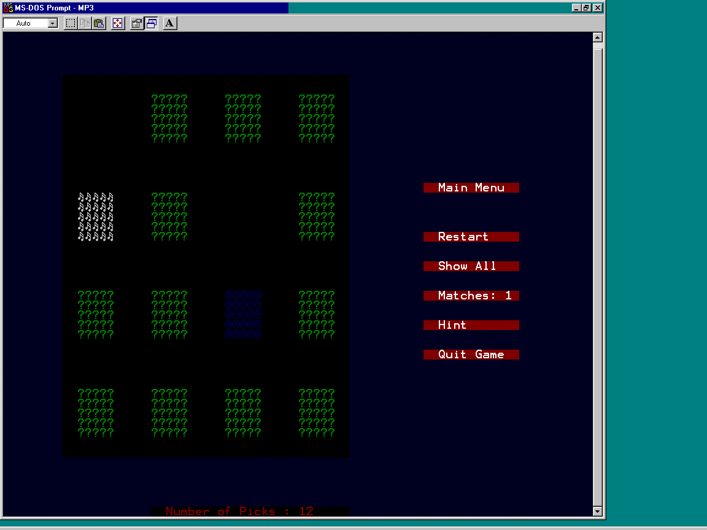

| ECE291 |
Computer Engineering II |
Moorman, Summer 1999 |
Machine Problem 3: Matching Game
| Assigned |
Tuesday, July 6, 1999 |
| Due Date |
Tuesday, July 13, 1999 |
| Purpose |
Text Mode Graphics, Tables, Software
Interrupts, Mouse Functions |
| Points |
50 |

Introduction
In the days before the University of Illinois ECE department,
future engineers would demonstrate their extraordinary thinking
power by challenging the less gifted to games that required every
ounce of brain in the body. One such game was the matching
game, more commonly known as "Memory". A number
of pairs of cards or tiles were shuffeled and placed face-down on
a table. A player had to select two tiles and turn them
over, revealing the faces of the tiles. If the faces
matched, the tiles were removed from the table. If the
faces did not match, the tiles were again turned face-down and
the player had to pick again. This continued until all of
the tiles were removed from the table. The person who took
the lowest number of picks to clear the table was declared the
most intelligent, and was given praise by the rest of the
community.
In this MP, we will recreate the matching game on a
computer. Our game will consist of 8 pairs of tiles, for a
total of 16 tiles. The player will use the mouse to select
a tile, revealing the tile's face. Once two tiles are
selected, the player must click the mouse again to continue
playing. If the faces match, the tiles are removed from the
board, otherwise the tiles are turned face-down again. The
game keeps track of the number of picks the player makes, and
increments this number every time a tile is selected. The
game also counts the number of matches made, and increments this
when a match is made.
Implementation
Your implementation of this MP should mimic that of the
library code. You will use text-mode graphics to display
the user interface and the tiles on the screen. All of the
game's input will be through the mouse.
When finished, your program should:
- Display the menu buttons on the right of the screen with
the game options.
- Use Mouse input to determine which game option was
selected.
- Use Mouse input to determine if a tile was clicked, and
if so, which one was clicked.
- Display the face of the tile once it has been selected.
- Determine if one or two tiles have been selected.
- Determine if a match is made once two tiles are selected.
- Keep track of the number of player picks and tile
matches.
- Give the player hints.
- Tell the player that he/she wins once all 8 pairs have
been matched.
User Interface
The program uses a menu-driven interface. Play with the
library code to get a feel of how the program operates, i.e. what
each menu button does and what happens when a tile is selected.
The menu consists of 5 buttons under the [Mail Menu] title:
- [Restart] restarts the game when selected.
- [Show All] displays all of the remaining tiles on the
board.
- [Matches] show the number of matches the player has
made. This cannot be selected.
- [Hint] reveals a pair of tiles.
- [Quit Game] allows the player to quit the game.
In addition to the main menu, input can be given to the
program by clicking the mouse on a face-down tile. Once a
tile is selected, it's face is displayed. The key data
structure for this program is called GameMatrix.
It is an array of bytes that holds the tile face at each location
on the screen. Since there are 8 pairs of tiles, there are
8 possible tile faces, numbered 0 through 7. On the screen,
the tiles are placed in a 4x4 grid, with each place on the grid
corresponding to an entry in GameMatrix as follows:
| 0 |
1 |
2 |
3 |
| 4 |
5 |
6 |
7 |
| 8 |
9 |
10 |
11 |
| 12 |
13 |
14 |
15 |
So, the upper-left tile on the screen corresponds to entry 0
in GameMatrix. For later reference, these will be
referred to by tile locations. Each
entry in GameMatrix holds the tile face type, a
value between 0 and 7. For example, a shuffeled GameMatrix
may look like the following:
| 1 |
5 |
3 |
7 |
| 7 |
0 |
2 |
6 |
| 6 |
4 |
4 |
1 |
| 2 |
3 |
5 |
0 |
So, the tile at location 14 would have face type
5.
Text Mode
You will be using text-mode graphics to display the game on
the screen. This involves the technique of memory-mapped IO to
display the appropriate characters by writing the character byte
and attribute byte to the video memory. For this MP, you
will additionally be using 80x50 text-mode. Treat it the
same way you would treat 80x25 mode, except that now you double
the memory page size.
Data Structures
The following variable have been defined for you in the
program framework.
- TilePlace: Array of words containing the
video-memory address of the first byte of the
upper-left character of each tile on the
grid. Each word in this array corresponds
to the location in GameMatrix. For
example, the first location in GameMatrix
is drawn at the place on the screen stored in the
first word in TilePlace.
CAUTION: GameMatrix has bytes, TilePlace
has words.
- MenuPlace: Array of words containing the
video-memory address of the first byte of the
left-most character of each button on the menu.
- GameMatrix: Table of bytes containing the face
type of each tile at each location on
the grid (see above). The face type
is an index into CardFace.
- GameBackup: A copy of GameMatrix. This may
come in handy.....
- CardFace: Array of bytes containing the
character values for each type of tile
face. Once a face type is extracted
from a given location in GameMatrix,
the face type is used as an index into this array
to get the character byte to draw the face of the
tile.
NOTE: If you would like to be creative, you can
change the entries to this array to any 8
characters you wish to use. Just be
careful.
- NumPicks: The number of picks the player
has made
- NumMatches: The number of matches the
player has made
- Selection: Pair of bytes that hold the
location of selected tiles.
- SelIndex: Byte that hold the current
number of tiles selected.
HINT: This value correspond to an index in Selection
- RandVal: A word value that is the output
of the Random function
Additionally, the following string variables have been defined
for you:
- MoveText: Array of bytes holding the text for the
sentence showing how many picks have been made.
- MenuText: Array of bytes containing the text for
the various menu buttons.
- YouWin: Array of bytes holding the text for the
You Win sentence shown once 8 matches have been made.
- TextString: Array of bytes representing a string
that can be used to help display number on the screen.
To make the programming easier and to keep everything
standard, many constants have been defined to specify character
bytes commonly used, character attributes commonly used,
locations used, etc. Please note that many of data
structures use constants. You may change some of the
constants if you like, but there are some that are vital to the
program, and changing them will cause disaster. Those you
can change will be noted with * at the end of the
description. Constants TEXTLOC, TEXTCOLOR, and TEXTLENGTH
refer to the variable MoveText.
- TEXTVIDSEG = 0B800h : page 0 of text video graphics
- BACKCOLOR = 1 : color of background*
- BACKCHAR = 176 : character of background*
- BLACKSTART = 5*160+16 : location where black section
starts
- BLACKWIDTH = 39 : width in characters for black section
of screen
- BLACKHEIGHT = 39 : height in characters of black section
of screen
- TILESTART = BLACKSTART+2*160+4 : location on screen of
first tile
- TILECOLOR = 2 : color of tile back*
- TILECHAR = 63 : character of tile back*
- TILEWIDTH = 5 : width in characters of a tile
- TILEHEIGHT = 5 : height in charaters of a tile
- TEXTLOC = 49*160+40 : location of place where text is
written
- TEXTCOLOR = 4 : color of text*
- TEXTLENGTH = 27 : length of text message
- COUNTLOC = TEXTLOC+40 : location of current pick
counter
- MENUSTART = 16*160+114 : starting location of main
menu
- MATCHLOC = MENUSTART+11*160+22 : location where number of
matches is written
- MENUCOLOR = 01001111b : attribute byte for main
menu*
- MENULENGTH = 13 : length of each menu bar
- MENUSIZE = 5 : number of menu bars in menu
- DEADTILE = 0FFh : replaces matched tile types in
GameMatrix
- RESTCLICK = 1 : value used when RESET is clicked
- SHOWCLICK = 2 : value used when SHOWALL is clicked
- QUITCLICK = 3 : value used when QUIT is clicked
- TILECLICK = 4 : value used when a tile is clicked
- HINTCLICK = 5 : value used when HINT bar is clicked
- SHUFAMOUNT = 200 : number of times GameMatrix
is shuffled*
- WINLOC = 70 : location of winning text
- WINCOLOR = 10011110b : attribute byte for winning
text*
- WINLENGTH = 11 : length of winning text
- CONSTANT1 = 17477 : first random constant (k1)
- CONSTANT2 = 9001 : second random constant (k2)
- DELAY1 = 5000 : delay constant to use for Hint
- DELAY2 = 5000 : another delay constant to use for Hint
Procedures
- This assignment has nine procedures. You will
receive credit for this assignment by replacing each of
the nine procedures listed below with your own code.
- Experiment with the working code to fully understand how
the finished program should work.
- Read through the given Main routine to gain an
understanding of the main structure of the program.
Although this is a simple procedure, it will provide
insight into how the program is organized.
- Your program should exactly match the functionality of
the library subroutines.
- If you change any of the constants that you are allowed
to change (see above), you must recompile the mp3.asm
file to see the changes.
- ES is set to the text video segment in the main function.
If you change the value of ES, make sure you reset ES to
the text video segment before you write to the screen.
- All procedures should be modular. They should
preserve any registers not specifically used for return
values.
- Important: Library routines only call other Library
routines. Keep this in mind when you are
testing your code.
- Random
- Purpose: To generate a random number
- Inputs: RandVal : The random value from
the previous call to Random.
- Outputs: ax : A new random number based on
the old RandVal and two constants, between
1 and 65535.
- Description: This function generates a 16-bit
pseudo-random number using two large prime number
seeds CONSTANT1 and CONSTANT2 and the previous
random number R(n) and calculates the new random
number R(n+1) using the following equation:
R(n+1) = (CONSTANT1 * R(n) + CONSTANT2) % maxval
where maxval is the maximum output value (FFFFh)
and n is the n'th call the to the function.
- Hints:
- % is the mod operation
- Perform multiplication and division using
16-bit operations
- RandVal holds new Random
calculation and AX is the previous value
of RandVal.
- Calls: None
- Points: 4
- DrawTile
- Purpose: To draw a single tile on the screen.
- Inputs:
- al : the character for the tile
- ah : the attribute for the tile character
- bx : the starting video memory address
for the tile
- Outputs: To screen.
- Description: This function draws a single tile to
the screen. All tiles are just one character
type, and that character number is stored in
al. The attribute for the character is
stored in ah. The starting address, bx, is the
video memory address of the upper-left character
in the tile.
- Hints: Use the given constants to draw the tiles
the correct height and width.
- Calls: none
- Points: 3
- DrawStatic
- Purpose: To draw the entire game board.
- Inputs: None.
- Outputs: To screen.
- Description: This function draws the entire game
board. It draws the background, the black
section, the menu, the face-down tiles (the tile
backs are showing), and the text telling the
player how many picks he/she has made.
- Notes: This function has a lot of code, but most
of it is just drawing to the screen.
- Hints: Use the given constants and tables to help
get the correct values for the size and color and
place of screen elements.
- Calls: DrawTile
- Points: 5
- MouseControl
- Purpose: To get user input via the mouse.
- Inputs: None.
- Outputs:
- ah : 0 unless a tile was clicked. If a
tile is clicked, ah is the tile location
(0 to 15) in GameMatrix.
- al : The value telling the program what
was clicked:
- TILECLICK : a tile was clicked.
- QUITCLICK : the QUIT bar was
clicked.
- RESTCLICK : the RESTART bar was
clicked.
- SHOWCLICK : the SHOWALL bar was
clicked.
- HINTCLICK : the HINT bar was
clicked.
- Description: The function tells the main
procedure what the user did. The program stays in
this function until the user selects something
that the program can use, either a menu bar or a
tile. If the user does not click a tile or a menu
bar, the function just loops and waits. If a
valid screen element is clicked, ax is set to the
appropriate values and the function is exited.
- Notes:
- The program spends most of its time in
this procedure. It waits for the user to
click a valid screen element (by clicked,
think of a mouse button press AND
release, not just press).
- The mouse status is read via software
interrupts. Input register AX and INT 33h
are used. Refer to the lab manual for
information on the mouse interrupts.
- In the main procedure the mouse is
already initialized and made visible to
the screen.
- Hints:
- Perform mouse operations on a button
release, not a button press. Think of why
this is the case.
- You will need to do many comparisons in
this procedure. Before diving into the
code, think of some shortcuts you can
take by using the given constants and
tables.
- If a tile has been removed due to a
match, nothing should happen when the
mouse is clicked on a blank space. There
are many ways to take care of this, but
think before you code; there is an easy
way to do this (note: I said EASY, not
SHORT).
- If a tile has been clicked and is showing,
then mouse control should not allow this
to return a valid click.
- Calls: None.
- Points 8
- ProcessTile
- Purpose: To draw the face of a selected tile to
the screen, and to check and see if a match has
been made.
- Inputs: ah : Location in GameMatrix of
tile that was clicked.
- Outputs:
- To screen.
- Update NumPicks.
- If a match is made, update NumMatches.
- Description: This function does a lot. First, it
draws the selected tile's face on the screen and
increments the pick counter. The color of the
tile face corresponds to the tile face type.
Next, it checks to see if a match has been made.
If the player has only selected one tile, the
function exits. Once two are selected, the player
must click the mouse again before going on. If a
match is made, the match counter is incremented
and the tiles are erased from the screen. If the
tiles don't match, the selected tiles are redrawn
face down. Once the player has matched all of the
tiles (eight matches), the You Win is displayed.
- Notes:
- Remember to increment the pick counter
whenever a tile is selected, and
increment the match counter only when a
match is made.
- You have to remember not only how many
tiles are currently selected, but also
what tiles were selected.
- If two tiles are selected and they do not
match, the number of tiles currently
selected goes back to zero.
- After two tiles are selected, the player
must click the mouse again to go on.
- If a match is made, the two matching
tiles are erased from GameMatrix.
- If eight matches are made, display the
You Win message.
- Hints:
- If a match is made, the two matching
tiles are erased from the board. Think of
this as drawing a black tile.
- When removing the matching pair of tiles
from GameMatrix, use the constant
DEADTILE to replace the face type in the
matching tile locations.
- When drawing a selected tile, use the
tile face type for the color of the face.
Remember: there is a face type 0, but
color 0 is black. So, you will have to
increment the face type to get the color
of the face. If you want, you may use
another array like CardFace that
holds all of the colors of the tiles.
This way, you can be more creative.
- Use the given constants and variables to
get needed values.
- Calls: DrawTile, Update.
- Points: 10
- SetUp
- Purpose: Initializes the game by setting the NumPicks
and NumMatches counters to zero, and by
shuffling the GameMatrix.
- Inputs:
- NumPicks
- NumMatches
- GameMatrix
- Outputs:
- NumPicks is set to zero.
- NumMatches is set to zero.
- A shuffled GameMatrix.
- Description: This function sets the counters to
zero and shuffles GameMatrix.
- Notes:
- The tiles must be placed in a random
fashion, so use Random to shuffle GameMatrix.
- While shuffling, remember that when you
are done, there must be two and only two
of each tile face type in the matrix, and
every spot must have a tile face type.
- Hints:
- When shuffling, think of an alternate way
rather than just putting a random tile
type in each location of the matrix.
- You may wany to use GameBackup
here.
- Calls: Random.
- Points: 4
- Update
- Purpose: To update the counters in the game.
- Input:
- NumPicks: The number of player
picks.
- NumMatches: The number of matches
made so far.
- Output: To screen.
- Description: This procedure displays the values
of NumPicks and NumMatches to the
screen.
- Notes:
- Hints: Use the ECE 291 library function binasc
and the given variable TextString.
- Calls: None.
- Points: 3
- ShowAll
- Purpose: To show the faces of the remaining
tiles.
- Input:
- Output:
- NumMatches is set to 8.
- To screen.
- Description: This procedure displays all of the
remaining tiles to the screen and sets NumMatches
to 8.
- Notes: This should only display the REMAINING
tiles, not the matched ones.
- Hints: Tiles that have been removed are stored in
GameMatrix using the constant DEADTILE.
- Calls: DrawTile, Update.
- Points: 3
- ProcessHint
- Purpose : To give the player a hint on a matching
pair of tiles.
- Inputs:
- Selection: Pair of bytes that stores the
locations of the selected tiles.
- SelIndex: Byte indicating the number of
tiles selected.
- Outputs:
- Description: This procedure is called when the
HINT bar is selected from the main menu. If no
tiles have been selected, this procedure should
scan through GameMatrix looking for the
first tile that has not been removed, find its
matching twin, and display both tiles. If one
tile has already been selected, this procedure
should find and display the matching twin. Once
the pair has been displayed, the procedure delays
for a length of time. After the delay, both tiles
are again turned face down. The player can then
continue playing as if no tiles have been
selected.
- Notes:
- Remember that if a tile has been removed
from GameMatrix, the face type
stored is the constant DEADTILE.
- Once the matching pair has been displayed
and hidden again, the player can continue
playing as if nothing happened, i.e. SelIndex
is set to zero.
- During the delay, make sure you burn
enough clock cycles so that the tile
faces are visible long enough for the
player to see.
- Hints: The given constants DEADTILE, DELAY1, and
DELAY2 will come in handy here.
- Calls: DrawTile
- Points : 10
Preliminary Procedure
- Copy the empty MP3 program (MP3.ASM), libraries
(libmp3.lib,lib291.lib), and Makefile from the network
drive to your home directory with the following command:
xcopy /s V:\ece291\mp3 W:\mp3
- Alternatively, from home, you can download the same files
as mp3.zip.
- As with previous MPs, run NMake to build an executable
program using the given ECE291 library functions.
- As with previous MPs, use a text editor to modify the
program. As given, the program uses LIBMP3 routines to
implement all functionality. To receive full credit for
the assignment, you will need to implement each of the
subroutines described above with your own code.
- As with previous MPs, use CodeView (CV) to debug and test
your program. Because you only receive credit for
procedures that function completely as specified, it is
best to debug each routine individually.
- Some advice: START EARLY. This MP takes a lot of code to
finish.
Final Steps
- Print a copy of the MP3 grading sheet.
- Demonstrate MP3.EXE to a TA or to the instructor.
Be prepared to answer questions about any aspect of the
operation of your program. The TAs will not accept an MP
if you cannot fully explain all operations of your code.
- Handin in your program by running:
A:\Handin YourWindowsLogin
- Print MP3.ASM using GreenPrint32.
- Staple the MP3 grading sheet to the front of your MP3.ASM
file and give both to the same TA that approved your
demonstration.
mp3.asm (Program framework)
PAGE 75, 132
TITLE ECE291 MP3 -- Your name, date
COMMENT %
ECE 291, Summer 1999
Jay Moorman
MP 3: Matching Game
Written by: Paul Pawola
%
;======== CONSTANTS =============================================
TEXTVIDSEG EQU 0B800h ; text-video segment
; screen constants
BACKCOLOR EQU 1 ; color of background
BACKCHAR EQU 176 ; character of background
BLACKSTART EQU 816 ; where black section starts
BLACKWIDTH EQU 39 ; character width for black section
BLACKHEIGHT EQU 39 ; character height for black section
TILESTART EQU BLACKSTART+2*160+4 ; first tile location
TILECOLOR EQU 2 ; color of tile back
TILECHAR EQU 63 ; character of tile face
TILEWIDTH EQU 5 ; number of characters across for tile
TILEHEIGHT EQU 5 ; number of characters down for tile
TEXTLOC EQU 7880 ; place where to write text
TEXTCOLOR EQU 4 ; color of text
TEXTLENGTH EQU 27 ; length of text message
COUNTLOC EQU TEXTLOC+40 ; place to put current pick counter
MENUSTART EQU 2674 ; location of start of main menu
MATCHLOC EQU MENUSTART+11*160+22 ; place to write number of matches
MENUCOLOR EQU 01001111b ; attribute byte for menu
MENULENGTH EQU 13 ; length of each menu bar
MENUSIZE EQU 6 ; number of bars on menu
DEADTILE EQU 0FFh ; value used for a tile after it has been matched
; Mouse Constants
RESTCLICK EQU 1 ; value for when RESET is clicked
SHOWCLICK EQU 2 ; value for when SHOWALL is clicked
QUITCLICK EQU 3 ; value for when QUIT is clicked
TILECLICK EQU 4 ; value for when a tile is clicked
HINTCLICK EQU 5 ; value for when HINT is clicked
SHUFAMOUNT EQU 200 ; number of times GameMatrix is shuffeled
WINLOC EQU 70 ; location of winning text
WINCOLOR EQU 10011110b ; attribute for winning text
WINLENGTH EQU 11 ; length of win text
CONSTANT1 EQU 17477 ; first random constant (K1)
CONSTANT2 EQU 9001 ; second random constant (K2)
DELAY1 EQU 5000 ; delay constant
DELAY2 EQU 5000 ; delay constant
;======== EXTERNALS =============================================
; -- LIB291 Routines (Free) ---
extrn rsave:near, rrest:near, dspout:near, dspmsg:near
extrn binasc:near, kbdin:near, dosxit:near
extrn mp3xit:near
; -- LIBMP3 Routines (not free)
extrn LibRandom:near
extrn LibDrawTile:near
extrn LibDrawStatic:near
extrn LibMouseControl:near
extrn LibUpdate:near
extrn LibSetUp:near
extrn LibProcessTile:near
extrn LibShowAll:near
extrn LibProcessHint:near
; -- Ignore this part: just for the library code
; this file just variables visible to library code
PUBLIC MoveText
PUBLIC TilePlace
PUBLIC MenuText
PUBLIC MenuPlace
PUBLIC GameMatrix
PUBLIC YouWin
PUBLIC CardFace
PUBLIC RandVal
PUBLIC NumPicks
PUBLIC NumMatches
PUBLIC TextString
PUBLIC Selection
PUBLIC SelIndex
PUBLIC GameBackup
; these are public constants
PUBLIC BACKCOLOR
PUBLIC BACKCHAR
PUBLIC TILECOLOR
PUBLIC TILECHAR
PUBLIC TEXTCOLOR
PUBLIC MENUCOLOR
PUBLIC SHUFAMOUNT
PUBLIC WINCOLOR
; ======== STACK SEGMENT ========================================
stkseg segment stack
db 128 dup ('STACK ')
stkseg ends
;====== BEGIN DATA/CODE SEGMENT =================================
cseg segment public 'CODE'
assume cs:cseg, ds:cseg, , ss:stkseg, es:nothing
;======== VARIABLES =============================================
MoveText db ' Number of Picks : ' ;text for move counter
TilePlace dw TILESTART ; table of tile starting locations
dw TILESTART+0*160+20
dw TILESTART+0*160+40
dw TILESTART+0*160+60
dw TILESTART+10*160
dw TILESTART+10*160+20
dw TILESTART+10*160+40
dw TILESTART+10*160+60
dw TILESTART+20*160
dw TILESTART+20*160+20
dw TILESTART+20*160+40
dw TILESTART+20*160+60
dw TILESTART+30*160
dw TILESTART+30*160+20
dw TILESTART+30*160+40
dw TILESTART+30*160+60
MenuText db ' Main Menu ','$' ; table of messages for menu
db ' Restart ','$'
db ' Show All ','$'
db ' Matches: ','$'
db ' Hint ','$'
db ' Quit Game ','$'
MenuPlace dw MENUSTART ; table of locations for menu
dw MENUSTART+5*160
dw MENUSTART+8*160
dw MENUSTART+11*160
dw MENUSTART+14*160
dw MENUSTART+17*160
GameMatrix db 0, 1, 2, 3 ; matrix showing tile locations
db 4, 5, 6, 7 ; only 8 possible tiles, in pairs
db 7, 6, 5, 4 ; of two
db 3, 2, 1, 0
GameBackup db 0, 1, 2, 3 ; use as a copy of GameMatrix
db 4, 5, 6, 7
db 7, 6, 5, 4
db 3, 2, 1, 0
CardFace db 01h, 03h, 04h, 05h ; array of tile faces
db 06h, 0ECh, 0Eh, 0Fh
YouWin db 'You Win!!!!' ; game winning text
RandVal dw 3 ; random value
NumPicks dw 0 ; number of picks made (no max)
NumMatches db 0 ; number of matches made (max of 8)
TextString db ' ' ; string used to draw numbers to screen
Selection db 0,0 ; pair of selected tiles
SelIndex db 0 ; index into pair.
;======== PROCEDURES ============================================
; Your procedures go here. Comment out the call to the libary code
; to test your procedure. REMEMBER: Library code calls other library
; procedures.
Random PROC NEAR
call LibRandom
ret
Random ENDP
DrawTile PROC NEAR
call LibDrawTile
ret
DrawTIle ENDP
DrawStatic PROC NEAR
call LibDrawStatic
ret
DrawStatic ENDP
MouseControl PROC NEAR
call LibMouseControl
ret
MouseControl ENDP
ProcessTile PROC NEAR
call LibProcessTile
ret
ProcessTile ENDP
SetUp PROC NEAR
call LibSetUp
ret
SetUp ENDP
Update PROC NEAR
call LibUpdate
ret
Update ENDP
ShowAll PROC NEAR
call LibShowAll
ret
ShowAll ENDP
ProcessHint PROC NEAR
call LibProcessHint
ret
ProcessHint ENDP
;======== MAIN PROCEDURE ========================================
MAIN Proc FAR
; Initialize DS register
mov ax, cseg
mov ds, ax
; Put display into 80x50 text mode
mov ax, 1202h ; Sets to 400 line scan mode
mov bl, 30h
int 10h
mov ax, 3 ; Sets to 8x8 font
int 10h
mov ax, 1112h ; Enter text mode
mov bl, 0
int 10h
mov ah, 02h ; hide text cursor
mov bh, 0
mov dh, 50
int 10h
mov ax, TEXTVIDSEG ; Setup the video segment as register es
mov es,ax
; Initialize mouse
mov ax, 0000h
int 33h
; Show Mouse
mov ax, 0001h
int 33h
; GameStart
GAMERESTART:
call DrawStatic ; draw background
call SetUp ; set up game play
call Update ; write Matches and Picks to screen
WAITMOUSE:
call MouseControl ; get mouse result
cmp al, QUITCLICK ; if quit, then done
je GAMEDONE
cmp al, RESTCLICK ; if restart, the restart game
je GAMERESTART
cmp al, SHOWCLICK ; if showall was clicked, show all tiles
jne CHECKHINT
call ShowAll
jmp WAITMOUSE
CHECKHINT: ; test if HINT was clicked
cmp al, HINTCLICK
jne ITWASATILE
call ProcessHint
jmp WAITMOUSE
ITWASATILE:
cmp al, TILECLICK ; test for a tile
jne GAMERESTART
call ProcessTile
jmp WAITMOUSE ; after tile is processed, go back to mouse
GAMEDONE:
mov ax, 1202h ; Scan lines
mov bl, 30h
int 10h
mov ax, 3 ; Font
int 10h
mov ax, 1112h ; Text Mode
mov bl, 0
int 10h
call mp3xit ; Exit program
MAIN ENDP
; ======= END OF PROCEDURES AND DATA ============================
CSEG ends
end main